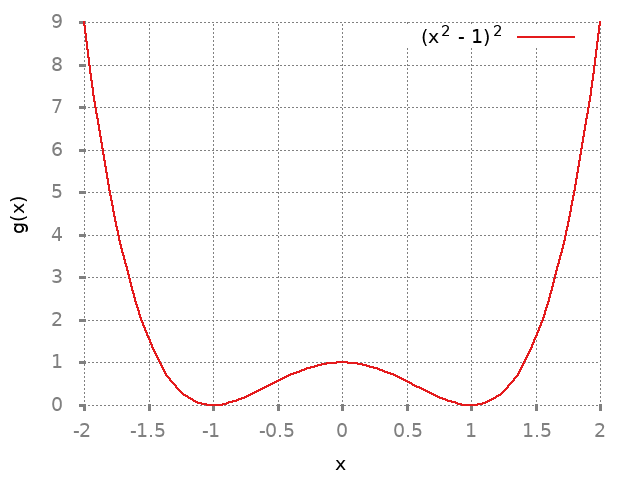
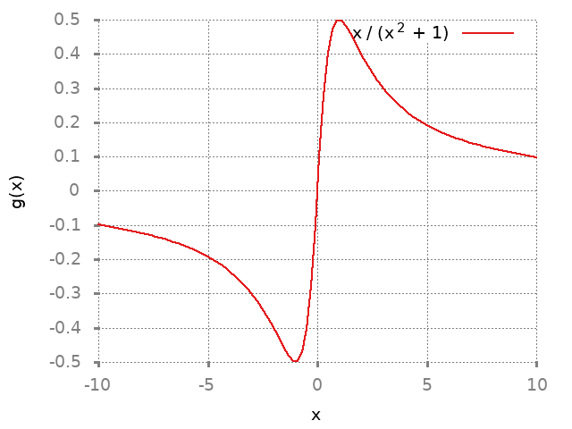

1 Increasing and Decreasing function
1.1 Solution 1
1.1.1 Solution a
| Interval | Property |
|---|---|
| \((p, q]\) | Strictly increasing |
| \([q,r]\) | Strictly decreasing |
| \([r,s]\) | Constant |
| \([s,t]\) | Strictly decreasing |
| \([t,u)\) | Strictly increasing |
| \((u, v]\) | Strictly increasing |
| \([q,t]\) | Weakly decreasing |
Attains maximum value at \(v\).No minimum value.
Local minimum at \(t\). Local maximum at \(q\).
Both local minimum and maximum occur at every point in the interval \((r,s)\)
1.1.2 Solution b
| Interval | Property |
|---|---|
| \([p,q)\) | Strictly increasing |
| \([q,r]\) | Strictly increasing |
| \([r,s]\) | Strictly decreasing |
| \((s,t]\) | Strictly decreasing |
| \([t,u]\) | Strictly increasing |
| \([u,v]\) | Strictly increasing |
| \([t,v]\) | Strictly increasing |
Attains maximum value at \(r\).
Attains minimum value at \(p\)
Local minima attained at \(t,s\)
Local maxima attained at \(r\).
1.2 Solution 2
set terminal png notransparent nointerlace rounded font "Alegreya, 14" set xlabel "x" set ylabel "f(x)" set grid set key right top plot [0:5] x**2 - (6*x) + 5 title "x^2 - 6x + 5" ls 1
\(f(x) = x^2 - 6x + 5\)
\(f'(x) = 2x-6\)
There are no points where \(f\) is not differentiable but there is one point where derivative is 0.
\(x = 3\)
| Property | Value |
|---|---|
| Critical number | 3 |
| Strictly decreasing | \((-\infty, 3]\) |
| Strictly increasing | \([3,\infty)\) |
By the first derivative test, \(f\) has a local minimum at \(3\). Function \(f\) has no local maximum.
1.3 Solution 3
set terminal png notransparent nointerlace rounded font "Alegreya, 14" set xlabel "x" set ylabel "f(x)" set grid set key right top plot [0:5] 3*x - x**2 title "3x - x^2" ls 1
\(g(x) = 3x- x^2\)
\(g'(x) = 3 - 2x\)
There are no points where \(g\) is not differentiable but there is one point where the derivative is \(0\).
\(x = 1.5\)
| Property | Value |
|---|---|
| Critical number | 1.5 |
| Strictly decreasing | \((-\infty, 1.5]\) |
| Strictly increasing | \([1.5,\infty)\) |
By the first derivative test, \(f\) has a local maximum at \(1.5\). Function \(g\) has no local minimum.
1.4 Solution 4
set terminal png notransparent nointerlace rounded font "Alegreya, 14" set xlabel "x" set ylabel "f(x)" set grid set key right top plot 12*x - x**3 title "12x - x^3" ls 1
Viewing local minimum:
set terminal png notransparent nointerlace rounded font "Alegreya, 14" set xlabel "x" set ylabel "f(x)" set grid set key right top plot [-4:0] 12*x - x**3 title "12x - x^3" ls 1
Viewing local maximum:
set terminal png notransparent nointerlace rounded font "Alegreya, 14" set xlabel "x" set ylabel "f(x)" set grid set key right top plot [-2:3] 12*x - x**3 title "12x - x^3" ls 1

\(f(x) = 12x - x^3\)
\(f'(x) = 12 - 3x^2\)
There are no points where \(f\) is not differentiable but there is two point where the derivative is zero.
\(x = 2, -2\)
| Property | Value |
|---|---|
| Critical number | 2,-2 |
| Strictly decreasing | \((-\infty, -2]\), \([2,\infty]\) |
| Strictly increasing | \([-2,2]\) |
By the first derivative test, \(f\) has a local maximum at \(2\) and local minimum at \(-2\).
1.5 Solution 5
Graph of the function:
set terminal png notransparent nointerlace rounded font "Alegreya, 14" set xlabel "x" set ylabel "g(x)" set grid set key right top plot (x**2 - 1)**2 title "(x^2 - 1)^2" ls 1

Graph for understanding their local minimum/maximum better:
set terminal png notransparent nointerlace rounded font "Alegreya, 14" set xlabel "x" set ylabel "g(x)" set grid set key right top plot [-2:2] (x**2 - 1)**2 title "(x^2 - 1)^2" ls 1

\(g(x) = (x^2 - 1)^2\)
\(g(x) = x^4 + 1 - 2x^2\)
\(g'(x) = 4x^3 - 4x\)
\(= 4x(x^2 - 1)\)
There are no points where \(g\) is not differentiable but there are three points where the derivate is zero.
\(x = 0, 1, -1\)
| Property | Value |
|---|---|
| Critical number | 0,1,-1 |
| Strictly decreasing | \((-\infty, -1]\),\([0,1]\) |
| Strictly increasing | \([-1,0]\),\([1,\infty)\) |
By the first derivative test, the local maximum is attained at \(0\) and local minimum is attained at \(-1\) and \(1\).
1.6 Solution 6
Graph of the function:
set terminal png notransparent nointerlace rounded font "Alegreya, 14" set xlabel "x" set ylabel "f(x)" set grid set key right top plot ((x**4 / 2) - 4*x**3 + 9*x**2 - 5) title "x^4/2 - 4x^3 + 9x^2 - 5" ls 1

\(f(x) = \dfrac{x^4}{2} - 4x^3 + 9x^2 - 5\)
\(f'(x) = 2x^3 - 12x^2 + 18x\)
There are no points where \(f\) is not differentiable but there are points where the derivate is zero.
\(f'(x) = x(2x^2 - 12x + 18)\)
\(f'(x) = 2x(x^2 - 6x + 9)\)
\(x = 0,3\)
| Property | Value |
|---|---|
| Critical number | 0,3 |
| Strictly decreasing | \((-\infty, 0]\) |
| Strictly increasing | \([0,\infty)\) |
By the first derivative test, the local minimum is attained at \(0\) and there is no local maximum.
1.7 Solution 7
set terminal png notransparent nointerlace rounded font "Alegreya, 14" set xlabel "x" set ylabel "g(x)" set grid set key right top plot ((x**4 / 2) - 4*x**3 + 5*x**2 - 5) title "x^4/2 - 4x^3 + 5x^2 - 5" ls 1

\(g(x) = \dfrac{x^4}{2} - 4x^3 + 5x^2 - 5\)
\(g'(x) = 2x^3 - 12x^2 + 10x\)
\(= 2x(x^2 - 6x + 5)\)
There are no points where \(f\) is not differentiable but there are three points where derivative is zero.
\(x = 0,1,5\)
| Property | Value |
|---|---|
| Critical number | 0,1,5 |
| Strictly decreasing | \((-\infty, 0], [1,5]\) |
| Strictly increasing | \([0,1], [5,\infty)\) |
By the first derivative test, the local minimum is attained at \(5,0\) and local maximum is attained at \(1\).
1.8 Solution 8
set terminal png notransparent nointerlace rounded font "Alegreya, 14" set xlabel "x" set ylabel "f(x)" set grid set key right top plot x - 4* sqrt(x) title "x - 4*sqrt(x)" ls 1
\(f(x) = x - 4\sqrt{x}\)
Domain: \([0, \infty)\)
\(f'(x) = 1 - \dfrac{2}{\sqrt{x}}\)
There is one point where \(f\) is not differentiable.
\(x = 0\)
There is on point where the deriviate is zero. \(x = 4\).
| Property | Value |
|---|---|
| Critical number | 0,4 |
| Strictly decreasing | \([0,4]\) |
| Strictly increasing | \([4,\infty)\) |
By the first derivative test we have local maximum at \(4\).
1.9 Solution 9
set terminal png notransparent nointerlace rounded font "Alegreya, 14" set xlabel "x" set ylabel "f(x)" set grid set key right top plot x**2 - 4* sqrt(x) title "x^2 - 4*sqrt(x)" ls 1
\(g(x) = x^2 - 4\sqrt{x}\)
Domain: \([0, \infty)\)
\(g'(x) = 2x - \dfrac{2}{\sqrt{x}}\)
\(= 2(x - \dfrac{1}{\sqrt{x}})\)
There is one point where \(g\) is not differentiable. \(x = 0\)
There is one point where the derivative is zero. \(x = 1\)
| Property | Value |
|---|---|
| Critical number | 0, 1 |
| Strictly decreasing | \([0,1]\) |
| Strictly increasing | \([1, \infty)\) |
By the first derivative test, the local minimum is attained at \(1\).
1.10 Solution 10
set terminal png notransparent nointerlace rounded font "Alegreya, 14" set xlabel "x" set ylabel "f(x)" set grid set key right top plot 1 / (x**2 + 1) title "1 / (x^2 + 1)" ls 1
\(f(x) = \dfrac{1}{x^2 + 1}\)
Domain: \((-\infty, \infty)\)
\(f(x) = (x^2 + 1)^{-1}\)
\(f'(x) = -1(x^2 + 1)^{-2}.2x\)
\(= \dfrac{-2x}{(1+x^2)^2}\)
There is no point where \(f\) is not differentiable. There is one point where the derivative is zero. \(x = 0\)
| Property | Value |
|---|---|
| Critical number | 0 |
| Strictly decreasing | \([0, \infty)\) |
| Strictly increasing | \((-\infty, 0)\) |
By first derivative test, the local maximum is attained at zero.
1.11 Solution 11
set terminal png notransparent nointerlace rounded font "Alegreya, 14" set xlabel "x" set ylabel "g(x)" set grid set key right top plot x / (x**2 + 1) title "x / (x^2 + 1)" ls 1

\(g(x) = \dfrac{x}{x^2 + 1}\)
\(g'(x) = \dfrac{x.-1.2x}{(x^2 + 1)^2} + (x^2 + 1)^{-1}\)
\(= \dfrac{-2x^2}{(x^2 + 1)^2} + \dfrac{1}{(1+x^2)}\)
\(= \dfrac{-2x^2}{(1+x^2)^2} + \dfrac{1+x^2}{(1+x^2)^2}\)
\(= \dfrac{1+x^2 -2x^2}{(1+x^2)^2} = \dfrac{1-x^2}{(1+x^2)^2}\)
There is no point where \(g\) is not differentiable. There is two points where the derivative is zero. \(x = 1, -1\)
| Property | Value |
|---|---|
| Critical number | 1,-1 |
| Strictly decreasing | \((-\infty, -1], [1,\infty)\) |
| Strictly increasing | \([-1,1]\) |
By first derivative test, the local minimum is attained at \(-1\) and the local maximum is attained at \(1\).
1.12 Solution 12
set terminal png notransparent nointerlace rounded font "Alegreya, 14" set xlabel "x" set ylabel "h(x)" set grid set key right top plot x**2 / (x**2 + 1) title "x^2 / (x^2 + 1)" ls 1

\(h(x) = \dfrac{x^2}{x^2+1}\)
Domain: \((-\infty, \infty)\)
\(h(x) = x^2(x^2 + 1)^{-1}\)
\(h'(x) = x^2.-1.(x^2 + 1)^{-2}.2x + (x^2 + 1)^{-1}.2x\)
\(= \dfrac{-2x^3}{(x^2 + 1)^2} + \dfrac{2x}{(1+x^2)}\)
\(= \dfrac{-2x^3 + 2x(1+x^2)}{(1+x^2)^2}\)
\(= \dfrac{2x + 2x^3 - 2x^3}{(1+x^2)^2}\)
\(= \dfrac{2x}{(1+x^2)^2}\)
There is no point where \(h\) is not differentiable. There is one point where the derivative is zero. \(x=0\)
| Property | Value |
|---|---|
| Critical number | 0 |
| Strictly decreasing | \((-\infty, 0]\) |
| Strictly increasing | \([0, \infty)\) |
By first derivative test, the local minimum is attained at \(0\). It has no local maximum.